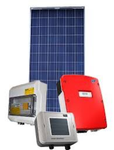

Para facilitar a explicação, utilizaremos à imagem ao lado. O inversor interativo,ele recebe a energia que foi gerada das placas soláres na CC(corrente contínua )e transformar em energia elétrica ,mudando para CA(corrente alternada).Tambem tendo uma outra funcionalidade,o inversor interativo,que é chamada de misturador de funcionalidade ,que basicamente mistura a energia solar a energia eletrica convencional. Após a instalação ,toda a energia q e gerada pelos painéis solares,e transformada pelo inversor e injetando a energia no quadro geral,assim essa energia alimentara a rede por completo.
Agora vamos conferir os equipamentos que compõem o sistema on grid. O kit de energia solar fotovoltaica tem a capacidade de transformar a energia solar em energia elétrica,como ja falamos, esse kit e composto por painéis soláres, o inversor e o controlador de energia O inversor solar sendo a peça principal desse sistema ,e instalado entre o sistema fotovoltaico e o ponto de fornecimento de energia ,faz a função de transformação de energia, mudando a energia CC para energia CA.
